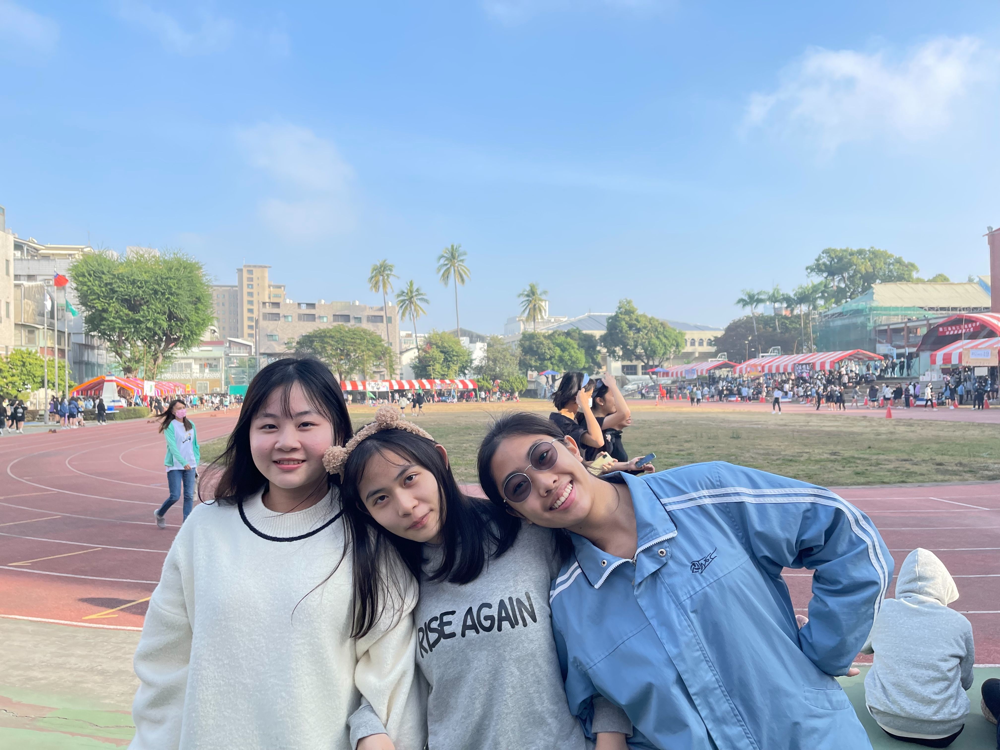
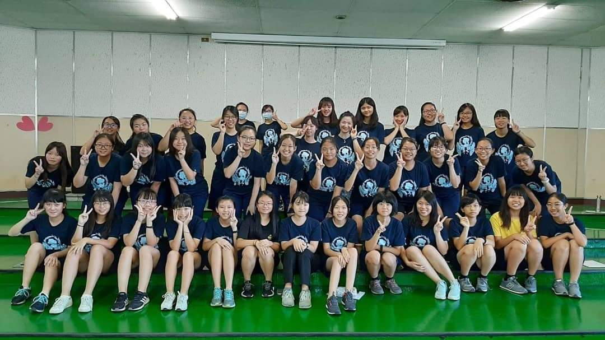
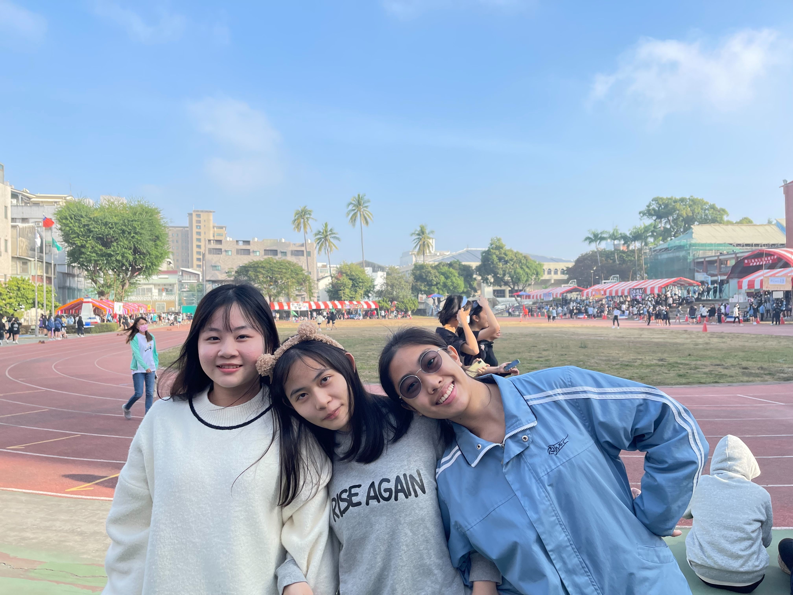
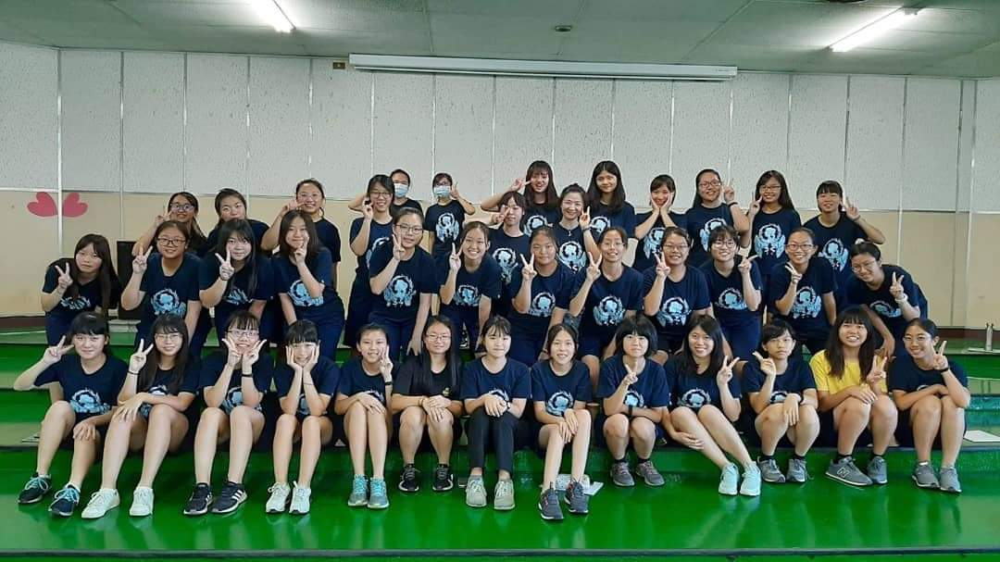

地表最強合作社
我們的合作社堪稱地表最強合作社，只有你想不到，沒有他們沒辦法賣的，從最普通的便當、飲料零食，到哈根達斯冰淇淋、dyson吸塵器，每次看到只會覺得天啊怎麼連這個都有賣。還有提供泡麵代煮的服務，每天兩點半過後，你只要自己去前面買一袋泡麵，拿給後面的廚房阿姨說要帶煮泡麵，幾分鐘後就可以獲得一碗香噴噴熱騰騰，有菜有肉有蛋的泡麵，拿回教室真的超香的。
最好吃的熱食部
午餐除了定合作社便當也可以到熱食部買，記得剛進南女時聽主任說，南女的熱食部是全台灣最好吃的熱食部，根據統計每個學生從入學到畢業平均會胖7公斤，一開始我還不相信，沒想到到了畢業的時候竟然真的胖好多＠＠都是熱食部害的。最受大家歡迎的就是黑輪嫂，她除了賣黑輪還有賣烤土司，吐司中間想夾什麼都可以，只要阿姨有的材料都可以點，其中最熱門號稱南女人必吃的就是巧克力卡拉雞，也就是吐司抹巧克力醬再夾卡拉雞，第一次聽到名字一定會覺得這個組合好可怕，但吃過一次就會愛上他，真的超好吃的，甚至每次校慶大家回學校，熱食部就會擠滿了回來吃巧克力卡拉雞的人。
排球
不知道為什麼，南女的大家都超愛打排球的，即使國中完全沒打過，進來打個三年也會有一定水準，每次下課放學12個球場都擠滿了人，有時候還要提早下樓佔球場。每年的排球聯賽也備受大家關注，小小一個體育館一下子湧進大半個學校的人，大家都為了看球賽乾脆翹課了。還有各式各樣的球衣、紀念T、吊飾、抱枕，真的不能小看南女人對排球的狂熱程度。
聲音
要說對南女的聲音印象，第一個應該是飛機聲吧，因為南女剛好再航道底下，一天到晚都有飛機經過，每次都要等飛機走了才能繼續上課，然根本聽不到老師的聲音。第二個是合作社的「餘額不足，請儲值」，因為我們買東西都是刷條碼不是付現金，但有時候就會忘記要儲值，然後機器就會發出超大聲的「餘額不足，請儲值」，真的超大聲，整個合作社都聽得到，然後你就會收穫所有人的目光，大家都知道你忘記儲值了，天啊真的超尷尬的。最後是校歌結尾的「吼嘿」，因為大家前面都不會唱，只會最後的歡呼，於是就會前面超安靜，然後最後所有人超大聲超整齊的喊出「吼嘿」！
竹音椰韻
南女和一中常常一起舉辦活動，有學生會、社團、甚至是班級為單位一起辦的活動，而竹音椰韻正是一個兩校一起舉辦的歌唱比賽，竹子代表一中、椰子則代表女中，可以單人報名自彈自唱，也可以組團一起演出，每次的比賽演出都超精彩的。